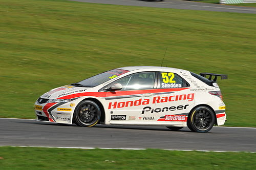

Racing Heritage
Touring Car Racing
- Civics have been used in racing since their introduction, competing globally across categories.
- Entered the Bathurst 1000 touring car race in Australia (1973-1976), finishing second in class in 1974 and 1976.
- Later competed in Japan, Europe, and the U.S., with endurance entries by Barwell and Cartek Motorsport.
- In 2002, JAS Motorsport fielded a Super 2000 Civic in the European Touring Car Championship, later entering WTCC.
- In 2005, Honda's R&D team won the '25 Hours of Thunderhill' endurance race with the eighth-generation Civic Si.
- Civics dominated the European Touring Car Cup (2006-2012), winning six out of seven years.
- In Argentina, Civics won the 2008 and 2009 TC 2000 Championships.
BTCC
- The Civic Type R debuted in the 2002 British Touring Car Championship (BTCC) with Arena Motorsport.
- Won multiple team titles including the BTCC Production Teams Championship with Barwell Motorsport.
- Continued success through 2004-2006, securing top manufacturer placements.
- Team Halfords introduced the eighth-generation Civic (2007), achieving 3rd place in multiple championships.
- Honda's works team, Team Dynamics, returned in 2010, winning the Manufacturers' Championship.
- In 2012, Honda debuted the ninth-generation Civic under NGTC rules—winning both team and driver titles in 2013.

WTCC
- Honda entered the World Touring Car Championship (WTCC) in 2012 with the ninth-generation Euro Civic hatchback.
- Powered by a 1.6-liter turbocharged HR412E engine developed by Honda R&D and JAS Motorsport.
- In 2013, Honda won the WTCC Manufacturers' World Championship with 4 wins and 20 podiums.
- Under new TC1 regulations (2014-2017), Civics secured multiple wins and pole positions despite setbacks.

Other Championships
- Won titles in the Japanese and Asian Touring Car Series and major global touring events.
- Success across Russian, Scandinavian, Italian, and German TCR championships.
- Kasper Jensen won five consecutive Danish TCR titles (2020-2024).
- Civic teams won South America and Australia Touring Car Championships (2021-2023).
- Finished 2nd in the 2024 Super GT Series with Team Kunimitsu.
- Rally wins under Group R3, including the 2014 European Rally Championship.
- Entered World Rallycross (2016, 2019) and holds the Nürburgring front-wheel-drive lap record.